Docker深入
Dockerå¤æ‚安装
mysql主ä»å¤åˆ¶
- å¯åŠ¨ä¸»åº“容器
docker run \
-p 3307:3306 \
--name mysql-master \
--privileged=true \
-v /ddocker/mysql-master/data:/var/lib/mysql \
-v /ddocker/mysql-master/conf:/etc/mysql/conf.d \
-v /ddcoker/mysql-master/mysql-files:/var/lib/mysql-files \
-e MYSQL_ROOT_PASSWORD=123456 \
-d mysql-
编辑é…ç½® conf/my.cnf (ï¼ï¼ï¼ï¼ï¼ï¼)
注æ„ï¼ï¼ï¼ï¼
æ¤å¤„文档æƒé™è¦æ”¹æˆ 444/474（让orangepi:7æ¥ç¼–辑，root:4æ¥æ‰§è¡Œï¼‰
ä¸èƒ½æœ‰ç©ºæ ¼ï¼ï¼ï¼
[mysqld]
server-id=101
## 指定ä¸éœ€è¦åŒæ¥çš„æ•°æ®åº“å称
binlog-ignore-db=mysql
binlog-ignore-db=information_schema
binlog-ignore-db=performance_schema
## å¼€å¯äºŒè¿›åˆ¶æ—¥å¿—功能
log-bin=mall-mysql-bin
## 设置二进制日志使用内å˜å¤§å°ï¼ˆäº‹åŠ¡ï¼‰
binlog_cache_size=1M
## è®¾ç½®ä½¿ç”¨çš„äºŒè¿›åˆ¶æ—¥å¿—æ ¼å¼ï¼ˆmixed,statement,row）
binlog_format=ROW
## 跳过主ä»å¤åˆ¶ä¸é‡åˆ°çš„所有错误或指定类å‹çš„错误，é¿å…slave端å¤åˆ¶ä¸æ–。
## 如：1062错误是指一些主键é‡å¤ï¼Œ1032é”™è¯¯æ˜¯å› ä¸ºä¸»ä»æ•°æ®åº“æ•°æ®ä¸ä¸€è‡´
slave_skip_errors=1062- é‡å¯
docker restart mysql-master- 进入主机容器
# 4.1进入mysql-master容器
docker exec -it mysql-master mysql -uroot -p123456
# 4.2创建数æ®åŒæ¥ç”¨æˆ·
CREATE USER 'slave'@'%' IDENTIFIED BY '123456';
GRANT REPLICATION SLAVE, REPLICATION CLIENT ON *.* TO 'slave'@'%';
ALTER USER 'slave'@'%' IDENTIFIED WITH mysql_native_password BY '123456';
flush privileges;- å¯åŠ¨ä»æœºå®¹å™¨
docker run \
-p 3308:3306 \
--name mysql-slave \
--privileged=true \
-v /ddocker/mysql-slave/data:/var/lib/mysql \
-v /ddocker/mysql-slave/conf:/etc/mysql/conf.d \
-v /ddcoker/mysql-master/mysql-files:/var/lib/mysql-files \
-e MYSQL_ROOT_PASSWORD=123456 \
-d mysql-
编辑é…ç½® conf/my.cnf
注æ„ï¼ï¼ï¼ï¼
æ¤å¤„文档æƒé™è¦æ”¹æˆ 444/474（让orangepi:7æ¥ç¼–辑，root:4æ¥æ‰§è¡Œï¼‰
ä¸èƒ½æœ‰ç©ºæ ¼ï¼ï¼ï¼
[mysqld]
server-id=102
## 指定ä¸éœ€è¦åŒæ¥çš„æ•°æ®åº“å称
binlog-ignore-db=mysql,information_schema,performance_schema
## å¼€å¯äºŒè¿›åˆ¶æ—¥å¿—功能，以备Slave作为其它数æ®åº“å®ä¾‹çš„Master时使用
log-bin=mall-mysql-slave1-bin
## 设置二进制日志使用内å˜å¤§å°ï¼ˆäº‹åŠ¡ï¼‰
binlog_cache_size=1M
## è®¾ç½®ä½¿ç”¨çš„äºŒè¿›åˆ¶æ—¥å¿—æ ¼å¼ï¼ˆmixed,statement,row）
binlog_format=ROW
## 跳过主ä»å¤åˆ¶ä¸é‡åˆ°çš„所有错误或指定类å‹çš„错误，é¿å…slave端å¤åˆ¶ä¸æ–。
## 如：1062错误是指一些主键é‡å¤ï¼Œ1032é”™è¯¯æ˜¯å› ä¸ºä¸»ä»æ•°æ®åº“æ•°æ®ä¸ä¸€è‡´
slave_skip_errors=1062
## relay_logé…ç½®ä¸ç»§æ—¥å¿—
relay_log=mall-mysql-relay-bin
## log_slave_updates表示slaveå°†å¤åˆ¶äº‹ä»¶å†™è¿›è‡ªå·±çš„二进制日志
log_slave_updates=1
## slave设置为åªè¯»ï¼ˆå…·æœ‰superæƒé™çš„用户除外）
read_only=1- 在主数æ®åº“ä¸æŸ¥çœ‹ä¸»ä»åŒæ¥çŠ¶æ€
show master status;
######
reset master; #清空日志,æ¤å¤„用äºä¸»åº“本身ä¸ä»åº“ä¸ä¸€è‡´, 执行到了ä»åº“æ— æ³•åŒæ¥çš„sql, 就会报错, 这时候é‡ç½®ä¸€ä¸‹binlog
######- 进入mysql-slave容器
docker exec -it mysql-slave mysql -uroot -p123456- 在ä»åº“ä¸é…置主ä»å¤åˆ¶
change master to master_host='192.168.1.111', master_user='slave', master_password='123456', master_port=3307, master_log_file='mall-mysql-bin.000001', master_log_pos=158, master_connect_retry=30;é…置说æ˜
| å‚æ•° | è¯´æ˜ |
|---|---|
| master_host | 主数æ®åº“çš„IPåœ°å€ |
| master_port | 主数æ®åº“çš„è¿è¡Œç«¯å£ |
| master_user | 在主数æ®åº“创建的用äºåŒæ¥æ•°æ®çš„ç”¨æˆ·è´¦å· |
| master_password | 在主数æ®åº“创建的用äºåŒæ¥æ•°æ®çš„用户密ç |
| master_log_file | 指定ä»æ•°æ®åº“è¦å¤åˆ¶æ•°æ®çš„日志文件，通过查看主数æ®çš„状æ€ï¼Œè·å–Fileå‚æ•° |
| master_log_pos | 指定ä»æ•°æ®åº“ä»å“ªä¸ªä½ç½®å¼€å§‹å¤åˆ¶æ•°æ®ï¼Œé€šè¿‡æŸ¥çœ‹ä¸»æ•°æ®çš„状æ€ï¼Œè·å–Positionå‚æ•° |
| master_connect_retry | è¿æ¥å¤±è´¥é‡è¯•çš„时间间隔，å•ä½ä¸ºç§’ |
- 在ä»åº“ä¸æ‰“å¼€åŠæŸ¥çœ‹ä¸»ä»åŒæ¥çŠ¶æ€
start slave;
show slave status \G;- æ•°æ®æµ‹è¯•
CREATE DATABASE `testslave2`;
use testslave2;
craete table aaa(id int, name varchar(20));
insert into aaa values(1, 't1');Redis集群模å¼
cluster(集群)模å¼-docker版哈希槽区分进行亿级数æ®å˜å‚¨
é¢è¯•é¢˜
1~2 亿æ¡æ•°æ®éœ€è¦ç¼“å˜ï¼Œè¯·é—®å¦‚何设计这个å˜å‚¨æ¡ˆä¾‹
å•æœºå•å° 100% ä¸å¯èƒ½ï¼Œè‚¯å®šæ˜¯åˆ†å¸ƒå¼å˜å‚¨ï¼Œç”¨ redis 如何è½åœ°ï¼Ÿ
一般业界有 3 ç§è§£å†³æ–¹æ¡ˆ
- 哈希å–余分区

2 亿æ¡è®°å½•å°±æ˜¯ 2 亿个k,v，我们å•æœºä¸è¡Œå¿…é¡»è¦åˆ†å¸ƒå¼å¤šæœºï¼Œå‡è®¾æœ‰3å°æœºå™¨æ„æˆä¸€ä¸ªé›†ç¾¤ï¼Œç”¨æˆ·æ¯æ¬¡è¯»å†™æ“ä½œéƒ½æ˜¯æ ¹æ®å…¬å¼ï¼š
hash(key) % N 个机器å°æ•°ï¼Œè®¡ç®—出哈希值，用æ¥å†³å®šæ•°æ®æ˜ 射到哪一个节点上。
优点：
​ 简å•ç²—暴，直æ¥æœ‰æ•ˆï¼Œåªéœ€è¦é¢„估好数æ®è§„划好节点，例如 3 å°ã€8 å°ã€10 å°ï¼Œå°±èƒ½ä¿è¯ä¸€æ®µæ—¶é—´çš„æ•°æ®æ”¯æ’‘。使用 Hash 算法让固定的一部分请求è½åˆ°åŒä¸€å°æœåŠ¡å™¨ä¸Šï¼Œè¿™æ ·æ¯å°æœåŠ¡å™¨å›ºå®šå¤„ç†ä¸€éƒ¨åˆ†è¯·æ±‚（并维护这些请求的信æ¯ï¼‰ï¼Œèµ·åˆ°è´Ÿè½½å‡è¡¡ + 分而治之的作用。
缺点：
​ åŸæ¥è§„划好的节点，进行扩容或者缩容就比较麻烦了é¢ï¼Œä¸ç®¡æ‰©ç¼©ï¼Œæ¯æ¬¡æ•°æ®å˜åŠ¨å¯¼è‡´èŠ‚点有å˜åŠ¨ï¼Œæ˜ 射关系需è¦é‡æ–°è¿›è¡Œè®¡ç®—，在æœåŠ¡å™¨ä¸ªæ•°å›ºå®šä¸å˜æ—¶æ²¡æœ‰é—®é¢˜ï¼Œå¦‚æœéœ€è¦å¼¹æ€§æ‰©å®¹æˆ–æ•…éšœåœæœºçš„情况下，åŸæ¥çš„å–模公å¼å°±ä¼šå‘生å˜åŒ–：Hash(key)/3 会å˜æˆ Hash(key) /?。æ¤æ—¶åœ°å€ç»è¿‡å–ä½™è¿ç®—的结æœå°†å‘生很大å˜åŒ–ï¼Œæ ¹æ®å…¬å¼è·å–çš„æœåŠ¡å™¨ä¹Ÿä¼šå˜å¾—ä¸å¯æ§ã€‚
æŸä¸ª redis 机器宕机了，由äºå°æ•°æ•°é‡å˜åŒ–，会导致 hash å–余全部数æ®é‡æ–°æ´—牌。
-
一致性哈希算法
â… èƒŒæ™¯
一致性哈希算法在1997年由麻çœç†å·¥å¦é™¢ä¸æå‡ºçš„ï¼Œè®¾è®¡ç›®æ ‡æ˜¯ä¸ºäº†è§£å†³åˆ†å¸ƒå¼ç¼“å˜æ•°æ®å˜åŠ¨å’Œæ˜ 射问题，æŸä¸ªæœºå™¨å®•æœºäº†ï¼Œåˆ†æ¯æ•°é‡æ”¹å˜äº†ï¼Œè‡ªç„¶å–ä½™æ•°ä¸ OK 了。
â…¡ 能干å—
æ出一致性 Hash 解决方案。 目的是当æœåŠ¡å™¨ä¸ªæ•°å‘生å˜åŠ¨æ—¶ï¼Œ å°½é‡å‡å°‘å½±å“客户端到æœåŠ¡å™¨çš„æ˜ å°„å…³ç³»
â…¢ 三大æ¥éª¤
-
算法æ„建一致性哈希ç¯
一致性哈希ç¯
​ 一致性哈希算法必然有个 hash 函数并按照算法产生 hash 值，这个算法的所有å¯èƒ½å“ˆå¸Œå€¼ä¼šæ„æˆä¸€ä¸ªå…¨é‡é›†ï¼Œè¿™ä¸ªé›†åˆå¯ä»¥æˆä¸ºä¸€ä¸ª hash 空间[0,2^32-1]，这个是一个线性空间，但是在算法ä¸ï¼Œæˆ‘们通过适当的逻辑æ§åˆ¶å°†å®ƒé¦–尾相è¿(0 = 2^32),è¿™æ ·è®©å®ƒé€»è¾‘ä¸Šå½¢æˆäº†ä¸€ä¸ªç¯å½¢ç©ºé—´ã€‚
​ 它也是按照使用å–模的方法，å‰é¢ç¬”记介ç»çš„节点å–模法是对节点（æœåŠ¡å™¨ï¼‰çš„æ•°é‡è¿›è¡Œå–模。而一致性 Hash 算法是对 2^32 å–模，简å•æ¥è¯´ï¼Œä¸€è‡´æ€§ Hash 算法将整个哈希值空间组织æˆä¸€ä¸ªè™šæ‹Ÿçš„圆ç¯ï¼Œå¦‚å‡è®¾æŸå“ˆå¸Œå‡½æ•° H 的值空间为 0-2^32-1（å³å“ˆå¸Œå€¼æ˜¯ä¸€ä¸ª 32 ä½æ— 符å·æ•´å½¢ï¼‰ï¼Œæ•´ä¸ªå“ˆå¸Œç¯å¦‚下图：整个空间按顺时针方å‘组织，圆ç¯çš„æ£ä¸Šæ–¹çš„点代表 0，0 点å³ä¾§çš„第一个点代表1，以æ¤ç±»æ¨ï¼Œ2ã€3ã€4ã€â€¦â€¦ç›´åˆ° 2^32-1，也就是说0点左侧的第一个点代表 2^32-1， 0 å’Œ 2^32-1 在零点ä¸æ–¹å‘é‡åˆï¼Œæˆ‘们把这个由2^32个点组æˆçš„圆ç¯ç§°ä¸º Hash ç¯ã€‚
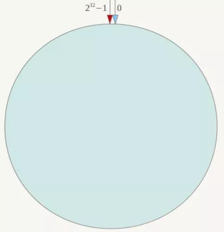
-
æœåŠ¡å™¨ IP èŠ‚ç‚¹æ˜ å°„
èŠ‚ç‚¹æ˜ å°„
将集群ä¸å„个 IP èŠ‚ç‚¹æ˜ å°„åˆ°ç¯ä¸Šçš„æŸä¸€ä¸ªä½ç½®ã€‚
å°†å„个æœåŠ¡å™¨ä½¿ç”¨Hash进行一个哈希，具体å¯ä»¥é€‰æ‹©æœåŠ¡å™¨çš„ IP 或主机å作为关键å—è¿›è¡Œå“ˆå¸Œï¼Œè¿™æ ·æ¯å°æœºå™¨å°±èƒ½ç¡®å®šå…¶åœ¨å“ˆå¸Œç¯ä¸Šçš„ä½ç½®ã€‚å‡å¦‚ 4 个节点 NodeAã€Bã€Cã€D，ç»è¿‡ IP 地å€çš„哈希函数计算(hash(ip))，使用 IP 地å€å“ˆå¸Œå在ç¯ç©ºé—´çš„ä½ç½®å¦‚下：

-
key è½åˆ°æœåŠ¡å™¨çš„è½é”®è§„则
当我们需è¦å˜å‚¨ä¸€ä¸ª kv 键值对时，首先计算 key çš„ hash 值，hash(key)，将这个 key 使用相åŒçš„函数 Hash 计算出哈希值并确定æ¤æ•°æ®åœ¨ç¯ä¸Šçš„ä½ç½®ï¼Œä»æ¤ä½ç½®æ²¿ç¯é¡ºæ—¶é’ˆâ€œè¡Œèµ°â€ï¼Œç¬¬ä¸€å°é‡åˆ°çš„æœåŠ¡å™¨å°±æ˜¯å…¶åº”该定ä½åˆ°çš„æœåŠ¡å™¨ï¼Œå¹¶å°†è¯¥é”®å€¼å¯¹å˜å‚¨åœ¨è¯¥èŠ‚点上。
如我们有 Object Aã€Object Bã€Object Cã€Object D 四个数æ®å¯¹è±¡ï¼Œç»è¿‡å“ˆå¸Œè®¡ç®—å，在ç¯ç©ºé—´ä¸Šçš„ä½ç½®å¦‚ä¸‹ï¼šæ ¹æ®ä¸€è‡´æ€§ Hash ç®—æ³•ï¼Œæ•°æ® A 会被定为到 Node A 上，B 被定为到 Node B 上，C 被定为到 Node C 上，D 被定为到 Node D 上。

Ⅳ 优点
-
一致性哈希算法的容错性
å‡è®¾ Node C 宕机，å¯ä»¥çœ‹åˆ°æ¤æ—¶å¯¹è±¡ Aã€Bã€D ä¸ä¼šå—到影å“，åªæœ‰ C 对象被é‡å®šä½åˆ° Node D。一般的，在一致性 Hash 算法ä¸ï¼Œå¦‚æœä¸€å°æœåŠ¡å™¨ä¸å¯ç”¨ï¼Œåˆ™å—å½±å“çš„æ•°æ®ä»…仅是æ¤æœåŠ¡å™¨åˆ°å…¶ç¯ç©ºé—´ä¸å‰ä¸€å°æœåŠ¡å™¨ï¼ˆå³æ²¿ç€é€†æ—¶é’ˆæ–¹å‘行走é‡åˆ°çš„第一å°æœåŠ¡å™¨ï¼‰ä¹‹é—´æ•°æ®ï¼Œå…¶å®ƒä¸ä¼šå—到影å“。简å•è¯´ï¼Œå°±æ˜¯ C 挂了，å—到影å“çš„åªæ˜¯ Bã€C 之间的数æ®ï¼Œå¹¶ä¸”这些数æ®ä¼šè½¬ç§»åˆ° D 进行å˜å‚¨ã€‚

-
一致性哈希算法的扩展性
æ•°æ®é‡å¢åŠ 了，需è¦å¢åŠ 一å°èŠ‚点 NodeX，X çš„ä½ç½®åœ¨ A å’Œ B 之间，那收到影å“的也就是 A 到 X 之间的数æ®ï¼Œé‡æ–°æŠŠ A 到 X çš„æ•°æ®å½•å…¥åˆ° X 上å³å¯ï¼Œ
ä¸ä¼šå¯¼è‡´ hash å–余全部数æ®é‡æ–°æ´—牌。
Ⅴ 缺点
一致性哈希算法的数æ®å€¾æ–œé—®é¢˜
一致性 Hash 算法在æœåŠ¡èŠ‚ç‚¹å¤ªå°‘æ—¶ï¼Œå®¹æ˜“å› ä¸ºèŠ‚ç‚¹åˆ†å¸ƒä¸å‡åŒ€è€Œé€ æˆæ•°æ®å€¾æ–œï¼ˆè¢«ç¼“å˜çš„对象大部分集ä¸ç¼“å˜åœ¨æŸä¸€å°æœåŠ¡å™¨ä¸Šï¼‰é—®é¢˜ï¼Œ
例如系统ä¸åªæœ‰ä¸¤å°æœåŠ¡å™¨ï¼š

Ⅵ 总结
为了在节点数目å‘生改å˜æ—¶å°½å¯èƒ½å°‘çš„è¿ç§»æ•°æ®
将所有的å˜å‚¨èŠ‚点æ’列在收尾相æ¥çš„ Hash ç¯ä¸Šï¼Œæ¯ä¸ª key 在计算 Hash å会顺时针找到临近的å˜å‚¨èŠ‚点å˜æ”¾ã€‚
è€Œå½“æœ‰èŠ‚ç‚¹åŠ å…¥æˆ–é€€å‡ºæ—¶ä»…å½±å“该节点在 Hash ç¯ä¸Šé¡ºæ—¶é’ˆç›¸é‚»çš„åç»èŠ‚点。
优点
åŠ å…¥å’Œåˆ é™¤èŠ‚ç‚¹åªå½±å“哈希ç¯ä¸é¡ºæ—¶é’ˆæ–¹å‘çš„ç›¸é‚»çš„èŠ‚ç‚¹ï¼Œå¯¹å…¶ä»–èŠ‚ç‚¹æ— å½±å“。
缺点
æ•°æ®çš„分布和节点的ä½ç½®æœ‰å…³ï¼Œå› 为这些节点ä¸æ˜¯å‡åŒ€çš„分布在哈希ç¯ä¸Šçš„，所以数æ®åœ¨è¿›è¡Œå˜å‚¨æ—¶è¾¾ä¸åˆ°å‡åŒ€åˆ†å¸ƒçš„效æœã€‚
-
-
哈希槽分区
â… èƒŒæ™¯
解决å‡åŒ€åˆ†é…的问题，在数æ®å’ŒèŠ‚点之间åˆåŠ 入了一层，把这层称为哈希槽（slot），用äºç®¡ç†æ•°æ®å’ŒèŠ‚点之间的关系，ç°åœ¨å°±ç›¸å½“äºèŠ‚点上放的是槽，槽里放的是数æ®ã€‚
槽解决的是粒度问题，相当äºæŠŠç²’度å˜å¤§äº†ï¼Œè¿™æ ·ä¾¿äºæ•°æ®ç§»åŠ¨ã€‚
å“ˆå¸Œè§£å†³çš„æ˜¯æ˜ å°„é—®é¢˜ï¼Œä½¿ç”¨ key 的哈希值æ¥è®¡ç®—所在的槽，便äºæ•°æ®åˆ†é…。
Ⅱ 多少个hash槽
一个集群åªèƒ½æœ‰ 16384 ä¸ªæ§½ï¼Œç¼–å· 0-16383（0-2^14-1）。这些槽会分é…给集群ä¸çš„所有主节点，分é…ç–略没有è¦æ±‚。å¯ä»¥æŒ‡å®šå“ªäº›ç¼–å·çš„槽分é…给哪个主节点。集群会记录节点和槽的对应关系。解决了节点和槽的关系å，æ¥ä¸‹æ¥å°±éœ€è¦å¯¹ key 求哈希值，然å对 16384 å–ä½™ï¼Œä½™æ•°æ˜¯å‡ key å°±è½å…¥å¯¹åº”的槽里。slot = CRC16(key) % 16384。以槽为å•ä½ç§»åŠ¨æ•°æ®ï¼Œå› 为槽的数目是固定的，处ç†èµ·æ¥æ¯”è¾ƒå®¹æ˜“ï¼Œè¿™æ ·æ•°æ®ç§»åŠ¨é—®é¢˜å°±è§£å†³äº†ã€‚
Ⅲ 哈希槽计算
Redis 集群ä¸å†…置了 16384 个哈希槽，redis ä¼šæ ¹æ®èŠ‚点数é‡å¤§è‡´å‡ç‰çš„å°†å“ˆå¸Œæ§½æ˜ å°„åˆ°ä¸åŒçš„节点。当需è¦åœ¨ Redis 集群ä¸æ”¾ç½®ä¸€ä¸ª key-value 时，redis 先对 key 使用 crc16 算法算出一个结æœï¼Œç„¶å把结æœå¯¹ 16384 æ±‚ä½™æ•°ï¼Œè¿™æ ·æ¯ä¸ª key 都会对应一个编å·åœ¨ 0-16383 ä¹‹é—´çš„å“ˆå¸Œæ§½ï¼Œä¹Ÿå°±æ˜¯æ˜ å°„åˆ°æŸä¸ªèŠ‚点上。如下代ç ，key之A ã€B 在 Node2， key 之 C è½åœ¨ Node3 上

3主3ä»Redis集群扩缩容é…ç½®
3主3ä»redis集群é…ç½®
- run 6个容器
docker run \
--name redis-node-n \
--net host \
--privileged=true \
-v /ddocker/redis-share/redis-node-n:/data \
-d redis:6.0.8 \
--cluster-enabled yes \
--appendonly yes \
--port 638n
docker run --name redis-node-1 --net host --privileged=true -v /ddocker/redis-share/redis-node-1:/data -d redis:6.0.8 --cluster-enabled yes --appendonly yes --port 6381
docker run --name redis-node-2 --net host --privileged=true -v /ddocker/redis-share/redis-node-2:/data -d redis:6.0.8 --cluster-enabled yes --appendonly yes --port 6382
docker run --name redis-node-3 --net host --privileged=true -v /ddocker/redis-share/redis-node-3:/data -d redis:6.0.8 --cluster-enabled yes --appendonly yes --port 6383
docker run --name redis-node-4 --net host --privileged=true -v /ddocker/redis-share/redis-node-4:/data -d redis:6.0.8 --cluster-enabled yes --appendonly yes --port 6384
docker run --name redis-node-5 --net host --privileged=true -v /ddocker/redis-share/redis-node-5:/data -d redis:6.0.8 --cluster-enabled yes --appendonly yes --port 6385
docker run --name redis-node-6 --net host --privileged=true -v /ddocker/redis-share/redis-node-6:/data -d redis:6.0.8 --cluster-enabled yes --appendonly yes --port 6386
##注æ„:
## cluster-enabled | appendonly yes | port 638n è¿™å‡ ä¸ªæ˜¯è·Ÿåœ¨redis:6.0.8åçš„
## net host模å¼ä¸èƒ½ç”¨-på‚æ•°,会报错å‚数详解
| å‚æ•° | 详解 |
|---|---|
| –net host | 使用宿主机的IP和端å£ï¼Œé»˜è®¤ |
| –cluster-enabled yes | å¼€å¯ redis 集群 |
| –appendonly yes | å¼€å¯æŒä¹…化 |
| –port 6386 | redis 端å£å· |
- 进入1å·æœºï¼Œå»ºç«‹ä¸»ä»å…³ç³»
docker exec -it redis-node-1 /bin/bash
redis-cli --cluster create 192.168.1.111:6381 192.168.1.111:6382 192.168.1.111:6383 192.168.1.111:6384 192.168.1.111:6385 192.168.1.111:6386 --cluster-replicas 1
## --cluster-replicas 1 表示为æ¯ä¸ªmaster创建一个slave节点
- 以 6281 作为切入点，查看集群状æ€
redis-cli -p 6381
cluster info
cluster nodes
#ä»ä¸‹å›¾å¯çœ‹åˆ° 1å·æœºä¸‹é¢æŒ‚çš„4å·, 2å·æœºä¸‹é¢æŒ‚çš„5å·, 3å·æœºä¸‹é¢æŒ‚çš„6å·ä¸»ä»å®¹é”™åˆ‡æ¢è¿ç§»æ¡ˆä¾‹
æ•°æ®ç‹¬å†™å˜å‚¨
-
å¯åŠ¨6机æ„æˆçš„集群并通过 exec 进入
docker exec -it redis-node-1 /bin/bashredis-cli -p 6381 -
对 6381 æ–°å¢ä¸¤ä¸ªkey
keys *set k1 v1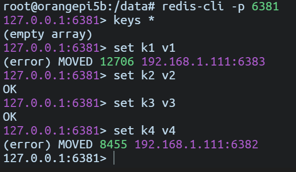
-
防æ¢è·¯ç”±å¤±æ•ˆåŠ å‚æ•° -c 并新å¢ä¸¤ä¸ªkey
redis-cli -p 6381 -c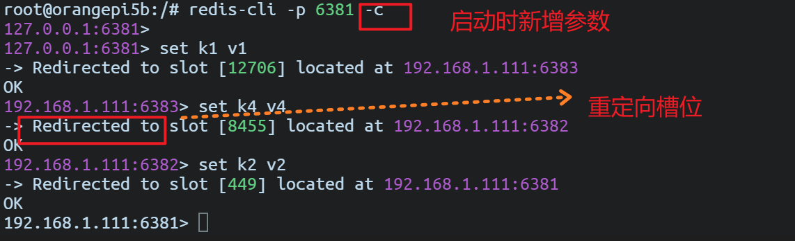
-
查看集群信æ¯
redis-cli --cluster check 192.168.1.111:6381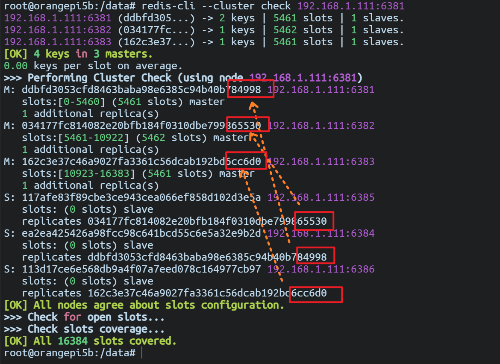
容错切æ¢è¿ç§»
- 主 6381å’Œä»æœºåˆ‡æ¢, å…ˆåœæ¢ä¸»æœº 6381
docker stop redis-node-1
docker exec -it redis-node-4 /bin/bash
redis-cli -p 6382 -c
cluster nodes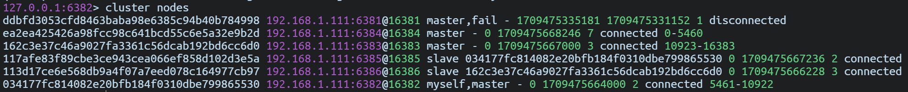
84498 宕机了，e9b2d上ä½æˆä¸ºæ–°çš„master
- 还åŸä¹‹å‰çš„ 84498
docker start redis-node-1
docker exec -it redis-node-1 /bin/bash
redis-cli -p 6381 -c
cluster nodes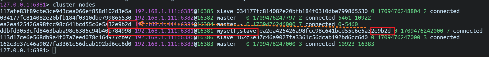
由图å¯çœ‹å‡º 84998 ä¾ç„¶æ˜¯ slave, 并且挂在e9b2d下é¢
主ä»æ‰©å®¹æ¡ˆä¾‹
- æ–°å¢6387ã€6388两个节点 + 新建åå¯åŠ¨+查看是å¦8个节点
docker run --name redis-node-7 --net host --privileged=true -v /ddocker/redis-share/redis-node-7:/data -d redis:6.0.8 --cluster-enabled yes --appendonly yes --port 6387
docker run --name redis-node-8 --net host --privileged=true -v /ddocker/redis-share/redis-node-8:/data -d redis:6.0.8 --cluster-enabled yes --appendonly yes --port 6388
docker ps- 进入 6387 容器å®ä¾‹å†…部，将新å¢çš„6387节点（空槽å·ï¼‰ä½œä¸º master èŠ‚ç‚¹åŠ å…¥åŸé›†ç¾¤
docker exec -it redis-node-7 /bin/bash
redis-cli --cluster add-node 自己å®é™…IP地å€:当å‰ç«¯å£ 自己å®é™…IP地å€:集群端å£
redis-cli --cluster add-node 192.168.1.111:6387 192.168.1.111:6381
- 检查节点
redis-cli --cluster check 192.168.1.111:6387
#å¯ä»¥çœ‹å‡ºè™½ç„¶6387åŠ å…¥é›†ç¾¤ä½†æ˜¯æ²¡æœ‰è¢«åˆ†é…槽ä½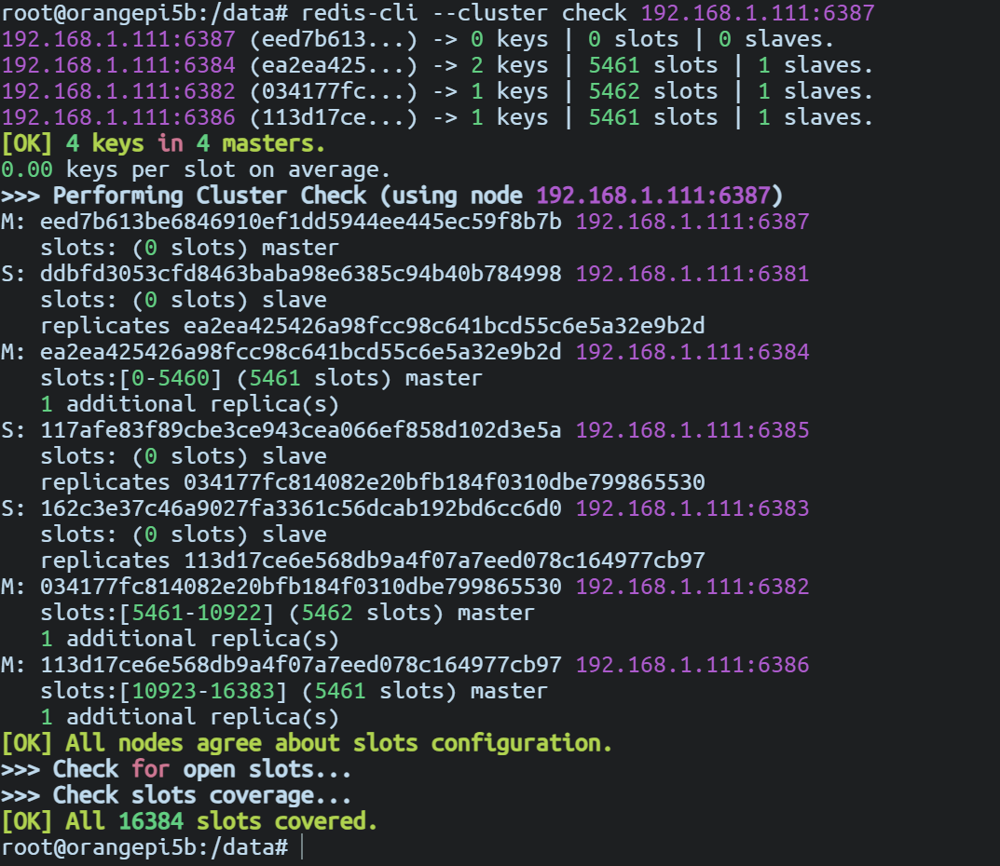
- é‡æ–°åˆ†é…槽å·
redis-cli --cluster reshard IP地å€:端å£å·
redis-cli --cluster reshard 192.168.1.111:6381
redis-cli --cluster check192.168.1.111:6387
#ä¸æ˜¯æ€æ¡Œåé‡æ–°åˆ†é…,而是å„自匀一部分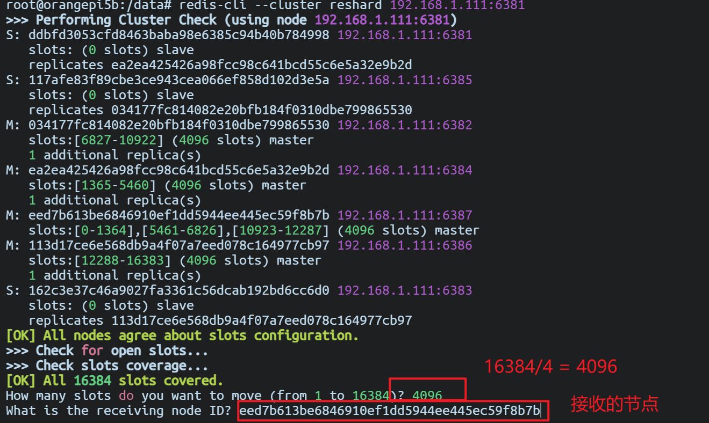
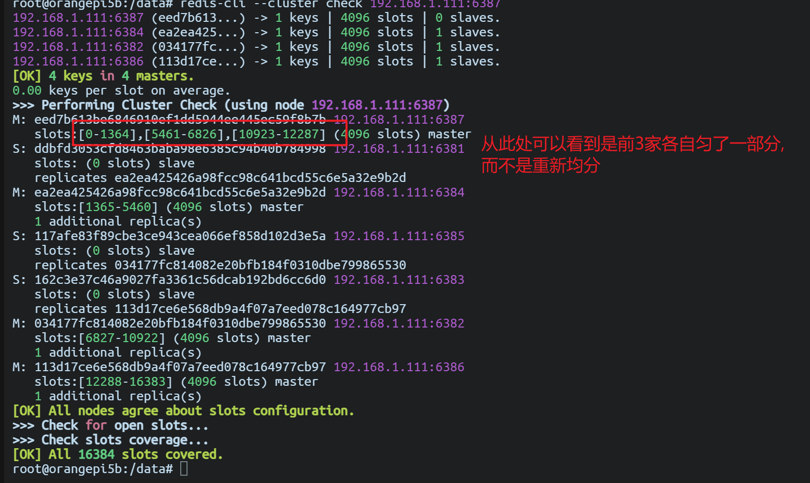
- 为新主机分é…æ–°çš„ä»èŠ‚点
redis-cli --cluster add-node ip:æ–°slaveç«¯å£ ip:æ–°masterç«¯å£ --cluster-slave --cluster-masterid 新主机节点ID
#举例
redis-cli --cluster add-node 192.168.1.111:6388 192.168.1.111:6387 --cluster-slave --cluster-master-id eed7b613be6846910ef1dd5944ee445ec59f8b7b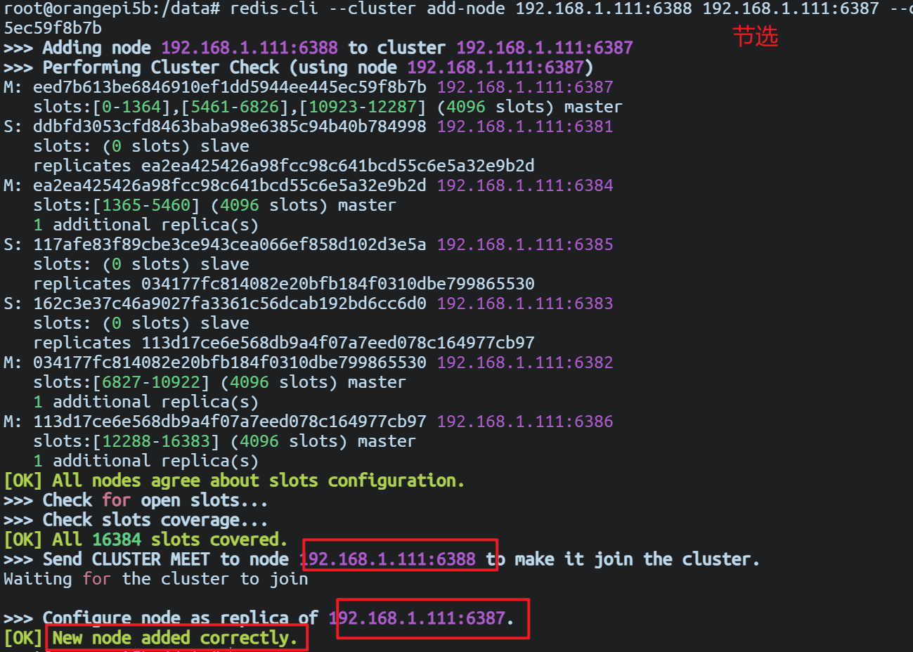
- å†æ¬¡æ£€æŸ¥é›†ç¾¤æƒ…况
redis-cli --cluster check 192.168.1.111:6383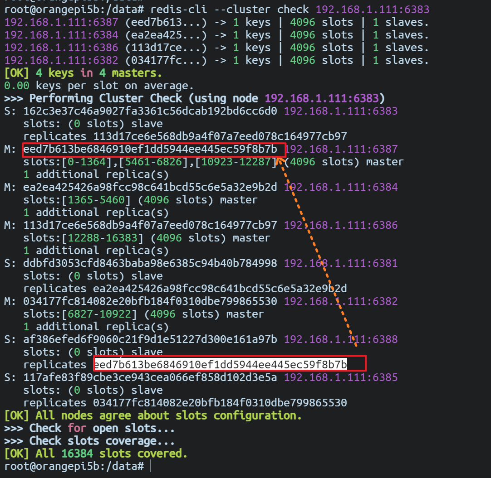
主ä»ç¼©å®¹æ¡ˆä¾‹
- 首先6388先下线
#检查集群è·å¾—6388的节点ID
redis-cli --cluster check 192.168.1.111:6384
redis-cli --cluster del-node ip:ä»æœºç«¯å£ ä»æœºèŠ‚点ID
#举例
redis-cli --cluster del-node 192.168.1.111:6388 af386efed6f9060c21f9d1e51227d300e161a97b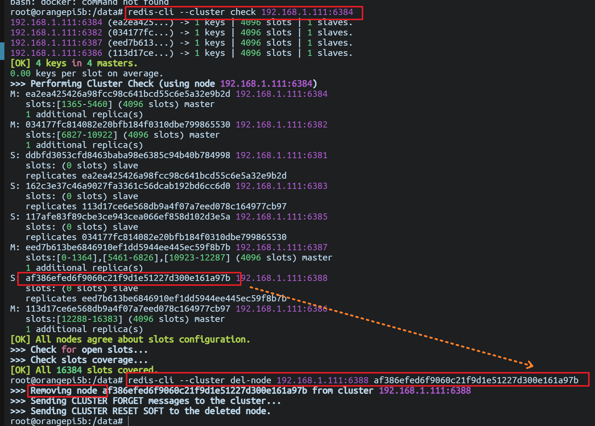
- å°†6387的槽å·æƒ…况，é‡æ–°åˆ†é…，本例将清出æ¥çš„槽å·éƒ½ç»™6384
redis-cli --cluster reshard 192.168.1.111:6381
#注æ„, æ¤å¤„6381åªæ˜¯é›†ç¾¤çš„一个è½è„šç‚¹, 并ä¸ç‰¹æŒ‡æŸä¸ªèŠ‚点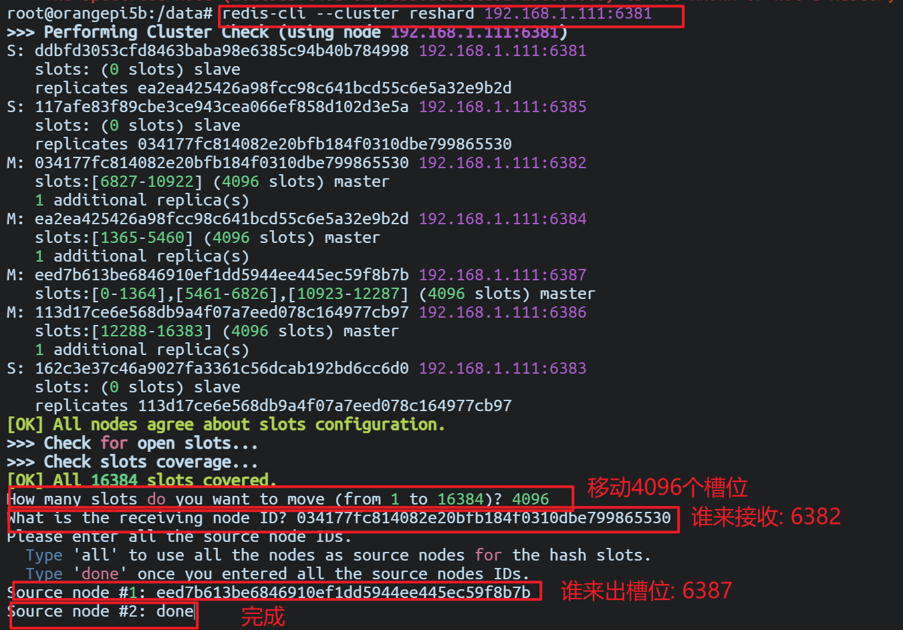
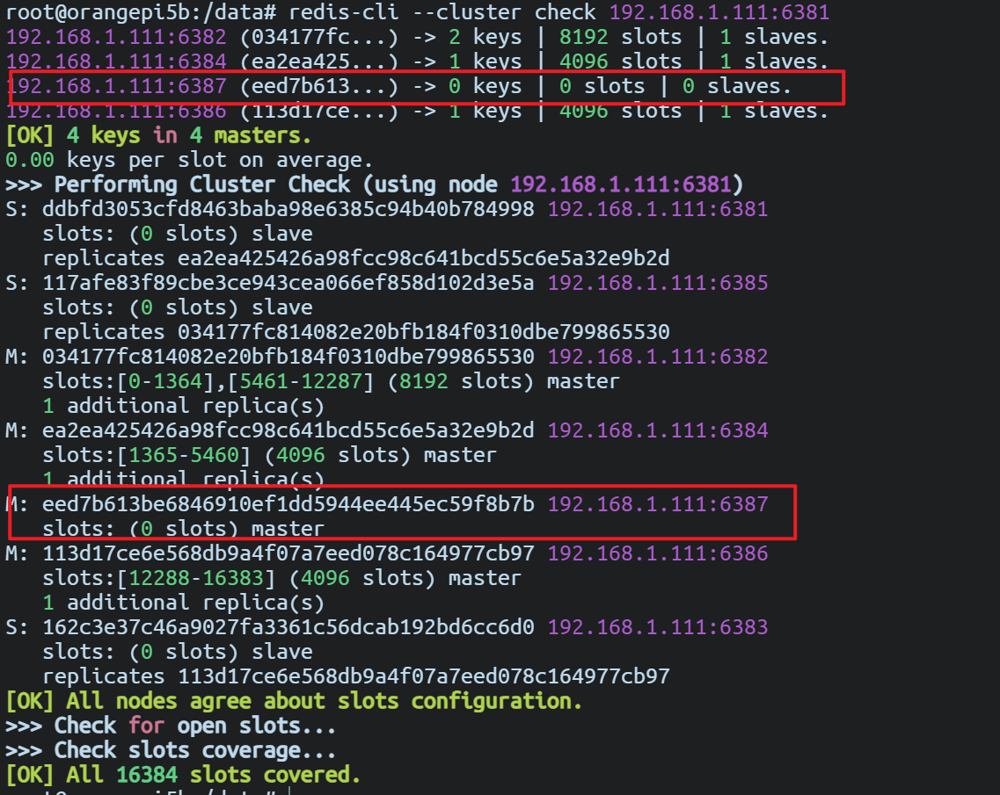
- å°†6387ä»é›†ç¾¤ä¸åˆ 除
redis-cli --cluster del-node 192.168.1.111:æœºå™¨ç«¯å£ èŠ‚ç‚¹id
#示例
redis-cli --cluster del-node 192.168.1.111:6387 eed7b613be6846910ef1dd5944ee445ec59f8b7b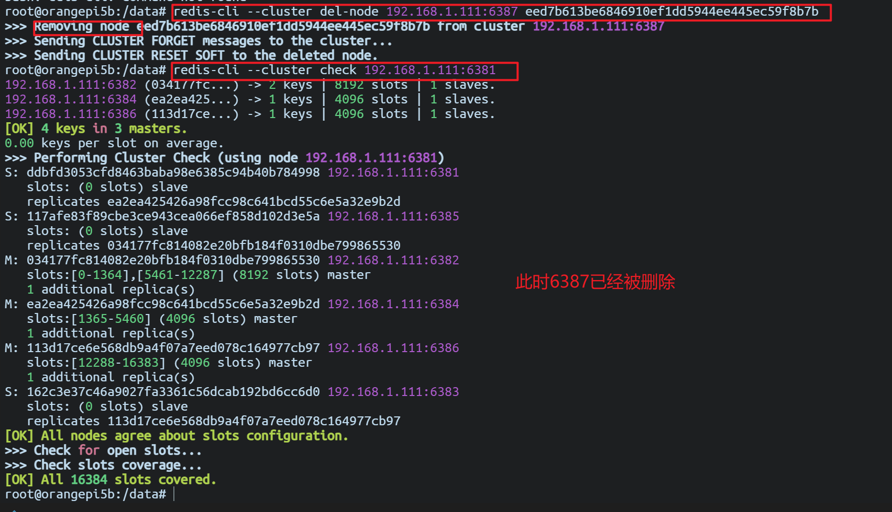
DockerFile解æ
Dockerfile 是用æ¥æ„建 Docker é•œåƒçš„文本文件，是由一æ¡æ¡æ„建镜åƒæ‰€éœ€çš„指令和å‚æ•°æ„æˆçš„脚本。
常用ä¿ç•™å—
| å…³é”®å— | 解释 |
|---|---|
| FROM | 基础镜åƒï¼Œå½“å‰æ–°é•œåƒæ˜¯åŸºäºå“ªä¸ªé•œåƒçš„，指定一个已ç»å˜åœ¨çš„é•œåƒä½œä¸ºæ¨¡æ¿ï¼Œç¬¬ä¸€æ¡å¿…须是 FROM |
| MAINTAINER | é•œåƒç»´æŠ¤è€…的姓åå’Œé‚®ç®±åœ°å€ |
| RUN | 容器æ„建时需è¦è¿è¡Œçš„命令，RUN 是在 docker build æ—¶è¿è¡Œ |
| EXPOSE | 当å‰å®¹å™¨å¯¹å¤–æš´éœ²å‡ºçš„ç«¯å£ |
| WORKDIR | 指定在创建容器å，终端默认登录的进æ¥å·¥ä½œç›®å½•ï¼Œä¸€ä¸ªè½è„šç‚¹ |
| USER | 指定该镜åƒä»¥ä»€ä¹ˆå…»çš„用户å»æ‰§è¡Œï¼Œå¦‚æœéƒ½ä¸æŒ‡å®šï¼Œé»˜è®¤æ˜¯ root |
| ENV | 用æ¥åœ¨æ„建镜åƒè¿‡ç¨‹ä¸è®¾ç½®ç¯å¢ƒå˜é‡ >>> 如：ENV MY_PATH /user/mytest，å¯ä»¥é€šè¿‡ WORKDIR $MY_PATH使用 |
| ADD | 将宿主机目录下的文件拷è´è¿›é•œåƒä¸”会自动è¿è¡Œå¤„ç† URL å’Œè§£å‹ tar å‹ç¼©åŒ… |
| COPY | 类似 ADD, æ‹·è´æ–‡ä»¶å’Œç›®å½•åˆ°é•œåƒä¸ |
| VOLUME | 容器数æ®å·ï¼Œç”¨äºæ•°æ®ä¿å˜å’ŒæŒä¹…化工作 |
| CMD | 指定容器å¯åŠ¨åçš„è¦å¹²çš„事情。注æ„：Dockerfile ä¸å¯ä»¥æœ‰å¤šä¸ª CMD 指令，但åªæœ‰æœ€å一个生效，CMD 会被 docker run 之åçš„å‚数替æ¢ã€‚CMD 是在 docker run æ—¶è¿è¡Œï¼›RUN 是在 docker build æ—¶è¿è¡Œã€‚ |
| ENTRYPOINT | 也是用æ¥æŒ‡å®šä¸€ä¸ªå®¹å™¨å¯åŠ¨æ—¶è¦è¿è¡Œçš„å‘½ä»¤ã€‚ç±»ä¼¼äº CMD 指令，但是 ENTRYPOINT ä¸ä¼šè¢« docker run åé¢çš„命令覆盖，而且这些命令行å‚数会被当åšå‚æ•°é€ç»™ ENTRYPOINT æŒ‡ä»¤æŒ‡å®šçš„ç¨‹åº |
è‡ªå®šä¹‰é•œåƒ mycentosjava8
å‰ç½®å·¥ä½œ
- 将安装包放置äºåŒä¸€ç›®å½•ä¸‹
- vim Dockerfile (注æ„文件å大å°å†™)
编写
FROM centos
MAINTAINER dee<saddyfire@155.com>
ENV MYPATH /usr/local
WORKDIR $MYPATH
#ç”±äº CentOS å·²ç»åœæ¢ç»´æŠ¤çš„问题。2020 å¹´ 12 月 8 å·ï¼ŒCentOS 官方宣布了åœæ¢ç»´æŠ¤ CentOS Linux 的计划，并æ¨å‡ºäº† CentOS Stream 项目，CentOS Linux 8 作为 RHEL 8 çš„å¤åˆ»ç‰ˆæœ¬ï¼Œç”Ÿå‘½å‘¨æœŸç¼©çŸï¼Œäº 2021 å¹´ 12 月 31 æ—¥åœæ¢æ›´æ–°å¹¶åœæ¢ç»´æŠ¤ï¼ˆEOL），更多的信æ¯å¯ä»¥æŸ¥çœ‹ CentOS 官方公告。如æœéœ€è¦æ›´æ–° CentOS，需è¦å°†é•œåƒä» mirror.centos.org 更改为 vault.centos.org
RUN sed -i 's/mirrorlist/#mirrorlist/g' /etc/yum.repos.d/CentOS-*
RUN sed -i 's|#baseurl=http://mirror.centos.org|baseurl=http://vault.centos.org|g' /etc/yum.repos.d/CentOS-*
RUN yum makecache
#安装vim编辑器
RUN yum -y install vim
#安装ifconfig命令查看网络IP
RUN yum -y install net-tools
#安装java8åŠlib库
RUN yum -y install glibc.i686
RUN mkdir /usr/local/java
#ADD是相对路径jar,把jdkxxx.tar.gzæ·»åŠ åˆ°å®¹å™¨ä¸,安装包必须è¦å’ŒDockerfile文件在åŒä¸€ä½ç½®
ADD jdk-8u171-linux-x64.tar.gz /usr/local/java/
#é…ç½®javaç¯å¢ƒå˜é‡
ENV JAVA_HOME /usr/local/java/jdk1.8.0_171
ENV JRE_HOME $JAVA_HOME/jre
ENV CLASSPATH $JAVA_HOME/lib/dt.jar:$JAVA_HOME/lib/tools.jar:$JRE_HOME/lib:$CLASSPATH
ENV PATH $JAVA_HOME/bin:$PATH
EXPOSE 80
CMD echo $MYPATH
CMD echo "success-----------OK"
CMD /bin/bashæ„建
docker build -t æ–°é•œåƒåå—:TAG .
#注æ„，上é¢TAGåé¢æœ‰ä¸ªç©ºæ ¼ï¼Œæœ‰ä¸ªç‚¹
#举例
docker build -t centosjava8:1.1 . 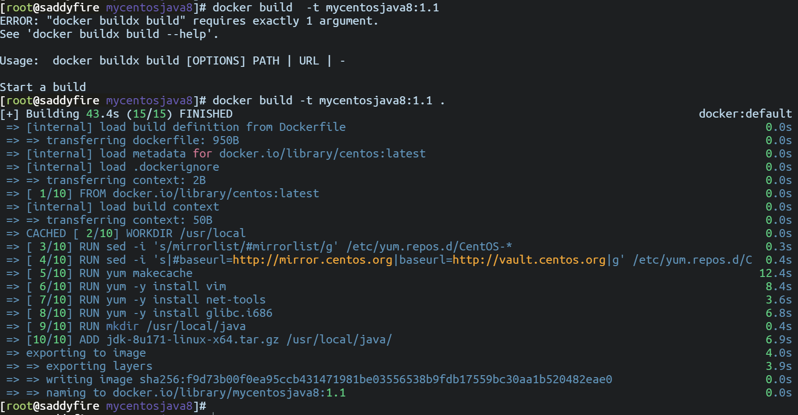
补充：进入 docker 容器å，exportå¯ä»¥æŸ¥çœ‹æ‰€æœ‰ç¯å¢ƒå˜é‡
è¿è¡Œ
docker run my虚悬镜åƒ
仓库åã€æ ‡ç¾éƒ½æ˜¯ <none> çš„é•œåƒï¼Œä¿—称dangling image
vim Dockerfile
####
FROM ubuntu
CMD echo 'action is success'
####
#æ„建
docker build .
#查看
docker images ls -f dangling=true
#åˆ é™¤
docker image prune自定义镜åƒmyubuntu
FROM ubuntu
MAINTAINER dee<saddyfire@155.com>
ENV MYPATH /
RUN apt update
RUN apt install net-tools
RUN apt install openjdk-8-jdk -y
EXPOSE 80
CMD echo $MYPATH
CMD echo "install ifconfig cmd success----"
CMD /bin/bashDockerå¾®æœåŠ¡
- 打 jar 包
- Dockerfile
#基础镜åƒ
FROM java:8
#作者
MAINTAINER dee<saddyfire@155.cn>
#指定临时文件目录为 /tmp,在主机 /var/lib/docker 目录下创建了一个临时文件并链æ¥åˆ°å®¹å™¨çš„ /tmp
VOLUME /tmp
#å°† jar åŒ…æ·»åŠ åˆ°å®¹å™¨ä¸å¹¶æ›´å为 dee_docker.jar
ADD
ENV MYPATH Docker网络
常用基本命令
查看网络
docker network ls
##############
NETWORK ID NAME DRIVER SCOPE
b1dfde1fa38f bridge bridge local
22fdd425c457 host host local
8a0d6dff90e5 none null local
##############查看网络æºæ•°æ®
docker network inspect XXX网络åå—
#举例
docker network inspect b1dfde1fa38f
##############
[
{
"Name": "bridge",
"Id": "b1dfde1fa38f03e0db1e81eafefbd89db931593233e81bcabe631c6d4d66a16e",
"Created": "2024-03-12T20:55:02.274728201+08:00",
"Scope": "local",
"Driver": "bridge",
"EnableIPv6": false,
"IPAM": {
"Driver": "default",
"Options": null,
"Config": [
{
"Subnet": "172.17.0.0/16",
"Gateway": "172.17.0.1"
}
]
},
"Internal": false,
"Attachable": false,
"Ingress": false,
"ConfigFrom": {
"Network": ""
},
"ConfigOnly": false,
"Containers": {},
"Options": {
"com.docker.network.bridge.default_bridge": "true",
"com.docker.network.bridge.enable_icc": "true",
"com.docker.network.bridge.enable_ip_masquerade": "true",
"com.docker.network.bridge.host_binding_ipv4": "0.0.0.0",
"com.docker.network.bridge.name": "docker0",
"com.docker.network.driver.mtu": "1500"
},
"Labels": {}
}
]
#############作用
容器间的互è”和通信以åŠç«¯å£æ˜ å°„
容器IPå˜åŠ¨æ—¶å€™å¯ä»¥é€šè¿‡æœåŠ¡åç›´æ¥ç½‘络通信而ä¸å—到影å“
网络模å¼
| ç½‘ç»œæ¨¡å¼ | 简介 |
|---|---|
| bridge | 为æ¯ä¸€ä¸ªå®¹å™¨åˆ†é…ã€è®¾ç½®IPç‰ï¼Œå¹¶å°†å®¹å™¨é“¾æ¥åˆ°ä¸€ä¸ª docker0虚拟网桥，默认为该模å¼ã€‚ |
| host | 容器将ä¸ä¼šè™šæ‹Ÿå‡ºè‡ªå·±çš„网å¡ï¼Œé…置自己的 IP ç‰ï¼Œè€Œæ˜¯ä½¿ç”¨å®¿ä¸»æœºçš„ IP å’Œç«¯å£ |
| none | 容器有独立的 Network namespaceï¼Œä½†å¹¶æ²¡æœ‰å¯¹å…¶è¿›è¡Œä»»ä½•ç½‘ç»œè®¾ç½®ï¼Œå¦‚åˆ†é… veth pair 和网桥è¿æ¥ï¼ŒIP ç‰ |
| container | 新创建的容器ä¸ä¼šåˆ›å»ºè‡ªå·±çš„网å¡å’Œé…置自己的 IP，而是和一个指定的容器共享 IPã€ç«¯å£èŒƒå›´ç‰ã€‚ |
bridge模å¼ï¼šä½¿ç”¨â€“network bridge指定，默认使用docker0
host模å¼ï¼šä½¿ç”¨â€“network host指定
none模å¼ï¼šä½¿ç”¨â€“network none指定
container模å¼ï¼šä½¿ç”¨â€“network container:NAME或者容器ID指定
bridge
Docker æœåŠ¡é»˜è®¤ä¼šåˆ›å»ºä¸€ä¸ª docker0 网桥（其上有一个 docker0 内部æ¥å£ï¼‰ï¼Œè¯¥æ¡¥æ¥ç½‘络的å称为 docker0ï¼Œå®ƒåœ¨å†…æ ¸å±‚è¿é€šäº†å…¶ä»–的物ç†æˆ–虚拟网å¡ï¼Œè¿™å°±å°†æ‰€æœ‰å®¹å™¨å’Œæœ¬åœ°ä¸»æœºéƒ½æ”¾åˆ°åŒä¸€ä¸ªç‰©ç†ç½‘络。Docker 默认指定了 docke0 æ¥å£çš„ IP 地å€å’Œå网æ©ç ，让主机和容器之间å¯ä»¥é€šè¿‡ç½‘桥相互通信。
查看 bridge 网络的详细信æ¯ï¼Œå¹¶é€šè¿‡ grep è·å–å称项
docker network inspect bridge|grep name
######
"com.docker.network.bridge.name": "docker0",
######- Docker 使用 Linux æ¡¥æ¥ï¼Œåœ¨å®¿ä¸»æœºè™šæ‹Ÿä¸€ä¸ª Docker 容器网桥(docker0), Docker å¯åŠ¨ä¸€ä¸ªå®¹å™¨æ—¶ä¼šæ ¹æ® Docker 网桥的网段分é…给容器一个IP地å€ï¼Œç§°ä¸º Container-lP, åŒæ—¶ Docker 网桥是æ¯ä¸ªå®¹å™¨çš„é»˜è®¤ç½‘å…³ã€‚å› ä¸ºåœ¨åŒä¸€å®¿ä¸»æœºå†…的容器都æ¥å…¥åŒä¸€ä¸ªç½‘æ¡¥ï¼Œè¿™æ ·å®¹å™¨ä¹‹é—´å°±èƒ½å¤Ÿé€šè¿‡å®¹å™¨çš„ Container-lP ç›´æ¥é€šä¿¡ã€‚
- docker run 的时候，没有指定 network çš„è¯é»˜è®¤ä½¿ç”¨çš„网桥模å¼å°±æ˜¯ bridge,使用的就是 docker0。在宿主机ifconfig, å°±å¯ä»¥çœ‹åˆ° docker0 和自己 create çš„ network(åé¢è®²)eth0, eth1, eth2…代表网å¡ä¸€ï¼Œç½‘å¡äºŒï¼Œç½‘å¡ä¸‰â€¦ï¼Œlo 代表 127.0.0.1ï¼Œå³ localhost, inet addr)用æ¥è¡¨ç¤ºç½‘å¡çš„ IP 地å€
- 网桥 docker0 创建一对对ç‰è™šæ‹Ÿè®¾å¤‡æ¥å£ä¸€ä¸ªå« veth, å¦ä¸€ä¸ªå« eth0, æˆå¯¹åŒ¹é…。
- 整个宿主机的网桥模å¼éƒ½æ˜¯ docker0, 类以一个交æ¢æœºæœ‰ä¸€å †æ¥å£ï¼Œæ¯ä¸ªæ¥å£å« veth, 在本地主机和容器内分别创建一个虚拟æ¥å£ï¼Œå¹¶è®©ä»–们彼比è”é€šï¼ˆè¿™æ ·ä¸€å¯¹æ¥å£å«veth pair）
- æ¯ä¸ªå®¹å™¨å®ä¾‹å†…部也有一å—网å¡ï¼Œæ¯ä¸ªæ¥å£å«eth0
- docker0 上é¢çš„æ¯ä¸ª veth 匹é…æŸä¸ªå®¹å™¨å®ä¾‹å†…部的 eth0, 两两é…对，一一匹é…。
通过上述，将宿主机上的所有容器都è¿æ¥åˆ°è¿™ä¸ªå†…部网络上，两个容器在åŒä¸€ä¸ªç½‘络下，会ä»è¿™ä¸ªç½‘关下å„自拿到分é…的，æ¤æ—¶ä¸¤ä¸ªå®¹å™¨çš„网络互通的。

案例
#拉镜åƒ
docker pull billygoo/tomcat8-jdk8
#å¯åŠ¨ä¸¤ä¸ªå®¹å™¨
docker run -d -p 8081:8080 --name tomcat81 billygoo/tomcat8-jdk8
docker run -d -p 8082:8080 --name tomcat82 billygoo/tomcat8-jdk8通过 ip addr 查看当å‰ç½‘络信æ¯
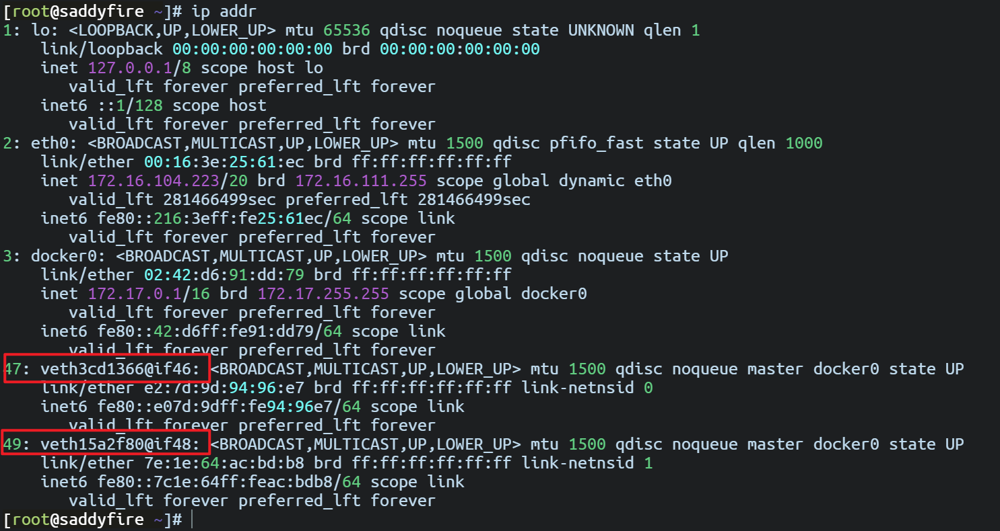
进入容器内部
docker exec -it tomcat81 /bin/bash
查看容器内部网络
ip addr
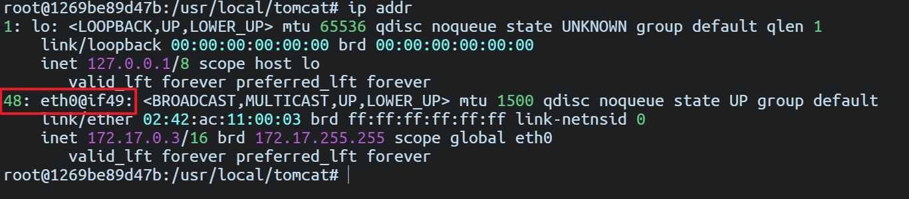
å¯ä»¥çœ‹åˆ° 宿主机 >>> 49: veth@if48 å’Œ tomcat81 >>> 48: eth0@if49 一一对应
host
ç›´æ¥ä½¿ç”¨å®¿ä¸»æœºçš„ IP 地å€ä¸å¤–界进行通信，ä¸åœ¨éœ€è¦é¢å¤–进行 NAT 转æ¢
容器将ä¸ä¼šè·å¾—一个独立的 Network Namespace，而是和宿主机公用一个 Network Namespace. 容器将ä¸ä¼šè™šæ‹Ÿå‡ºè‡ªå·±çš„网å¡è€Œæ˜¯ä½¿ç”¨å®¿ä¸»æœºçš„ IP 和端å£ã€‚
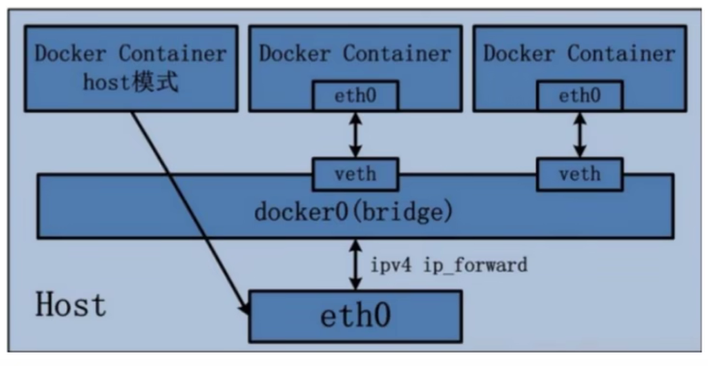
案例
docker run -d -p --network host --name tomcat83 billygoo/tomcat8-jdk8在 CentOS 里é¢ç”¨é»˜è®¤çš„æµè§ˆå™¨è®¿é—®å®¹å™¨å†…çš„ tomcat83 看到访问æˆåŠŸï¼Œå› 为æ¤æ—¶å®¹å™¨çš„ IP 借用主机的，
所以容器共享宿主机网络 IP, è¿™æ ·çš„å¥½å¤„æ˜¯å¤–éƒ¨ä¸»æœºä¸å®¹å™¨å¯ä»¥ç›´æ¥é€šä¿¡ã€‚
none
在 none 模å¼ä¸‹ï¼Œå¹¶ä¸ä¸º Docker 容器进行任何网络é…置。
也就是说，这个 Docker 容器没有网å¡ã€IPã€è·¯ç”±ç‰ä¿¡æ¯ï¼Œåªæœ‰ä¸€ä¸ªlo
需è¦æˆ‘们自己为 Docker å®¹å™¨æ·»åŠ ç½‘å¡ã€é…ç½® IP ç‰ã€‚
container
新建的容器和己ç»å˜åœ¨çš„一个容器共享一个网络é…置而ä¸æ˜¯å’Œå®¿ä¸»æœºå…±äº«ã€‚新创建的容器ä¸ä¼šåˆ›å»ºè‡ªå·±çš„网å¡ï¼Œé…置自己的 IP,而 是和一个指定的容器共享 IPã€ç«¯å£èŒƒå›´ç‰ã€‚åŒæ ·ï¼Œä¸¤ä¸ªå®¹å™¨é™¤äº†ç½‘络方é¢ï¼Œå…¶ä»–的如文件系统ã€è¿›ç¨‹åˆ—表ç‰è¿˜æ˜¯éš”离的。
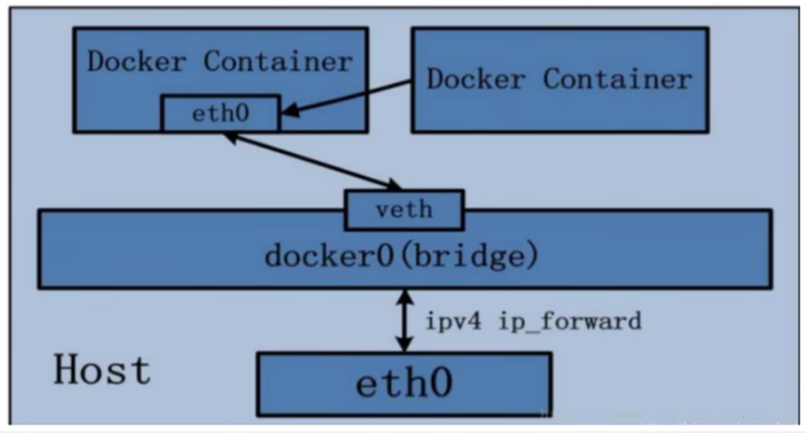
案例
docker run -d -p 8085:8080 --name tomcat85 billygoo/tamcat8-jdk8
docker run -d -p 8086:8080 --network container:tomcat85 --name tomcat86 billygoo/tamcat8-jdk8自定义网络
docker run -d -p 8081:8080 --name tomcat81 billygoo/tomcat8-jdk8
docker run -d -p 8082:8080 --name tomcat82 billygoo/tomcat8-jdk8
#å¯åŠ¨å进入容器å®ä¾‹å†…部
docker exec -it tomcat81 /bin/bash
docker exec -it tomcat82 /bin/bash
#在81里ping 82
ping 172.17.0.3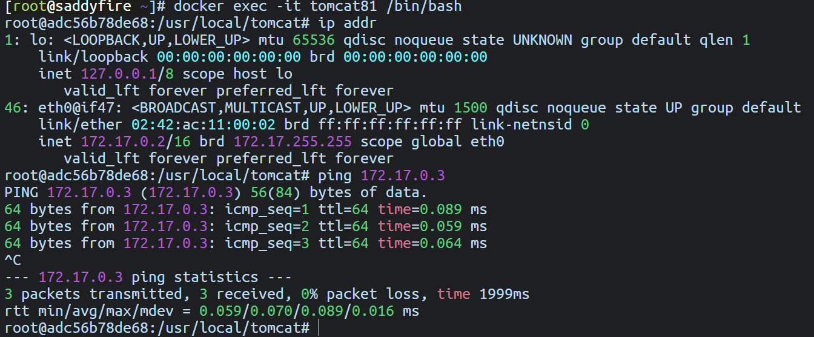
通过自定义网络使用æœåŠ¡åè¿é€šç½‘络
-
新建自定义网络
docker network create dee_network -
æ–°å»ºå®¹å™¨åŠ å…¥ä¸Šä¸€æ¥æ–°å»ºçš„自定义网络
docker run -d -p 8081:8080 --network dee_network --name tomcat81 billygoo/tomcat8-jdk8 docker run -d -p 8082:8080 --network dee_network --name tomcat82 billygoo/tomcat8-jdk8 -
互相ping测试
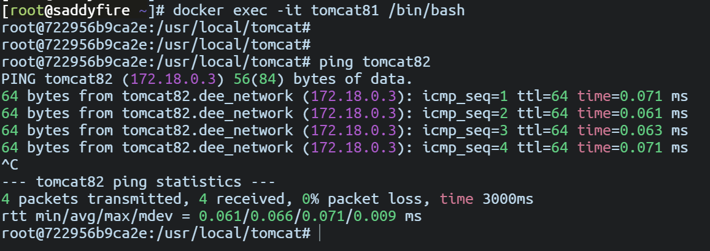
Docker-compose容器编æ’
Docker-Compose 是 Docker 官方的开æºé¡¹ç›®ï¼Œ è´Ÿè´£å®ç°å¯¹ Docker 容器集群的快速编æ’。
docker compose version
常用命令
| 命令 | 详情 |
|---|---|
| docker compose -h | 查看帮助 |
| docker compose up | å¯åŠ¨æ‰€æœ‰docker-composeæœåŠ¡ |
| docker compose up -d | å¯åŠ¨æ‰€æœ‰docker-composeæœåŠ¡å¹¶åå°è¿è¡Œ |
| docker compose down | åœæ¢å¹¶åˆ 除容器ã€ç½‘络ã€å·ã€é•œåƒ |
| docker compose exec yml里的æœåŠ¡id | 进入容器å®ä¾‹å†…部 docker-compose exec docker-compose.yml文件ä¸å†™çš„æœåŠ¡id /bin/bash |
| docker compose ps | 展示当å‰docker-composeç¼–æ’过的è¿è¡Œçš„所有容器 |
| docker compose top | 展示当å‰docker-composeç¼–æ’过的容器进程 |
| docker compose logs yml里é¢çš„æœåŠ¡id | 查看容器输入日志 |
| docker compose config | 检查é…ç½® |
| docker compose config -q | 检查é…置，有问题æ‰è¾“出 |
| docker compose restart | é‡å¯æœåŠ¡ |
| docker compose start | å¯åŠ¨æœåŠ¡ |
| docker compose stop | åœæ¢æœåŠ¡ |
ç¼–æ’æœåŠ¡
docker-compose.yml
version: "3.8"
services:
microService:
image: dee_docker:1.6
container_name: dd01
ports:
- "6001:6001"
volumes:
- /app/microService:/data
networks:
-dee_net
depends_on:
- redis
- mysql
redis:
restart: always
image: redis:6.0.8
container_name: dee_redis
ports:
- "16379:6379"
volumes:
- /ddocker/redis/conf/redis.conf:/etc/redis/redis.conf
- /ddocker/redis/data:/data
networks:
- dee_net
command: redis-server /etc/redis/redis.conf
mysql:
image: mysql:8.0
container_name: dee_mysql
restart: always
ports:
- "13306:3306"
logging:
driver: 'json-file'
options:
max-size: '5g'
environment:
MYSQL_ROOT_PASSWORD: 2323
volumes:
- /ddocker/mysql/data:/var/lib/mysql
- /ddocker/mysql/conf/my.cnf:/etc/my.cnf
- /ddocker/mysql/init:/docker-entrypoint-initdb.d
networks:
- dee_net
command: --default-authentication-plugin=mysql_native_password #è§£å†³å¤–éƒ¨æ— æ³•è®¿é—®
networks:
dee_net:å•ç‹¬mysqlç¼–æ’
version: "3.8"
services:
mysql:
image: mysql:8.0
container_name: dee_mysql
restart: always
ports:
- "13306:3306"
logging:
driver: 'json-file'
options:
max-size: '5g'
environment:
MYSQL_ROOT_PASSWORD: 2323
volumes:
- /ddocker/mysql/data:/var/lib/mysql
- /ddocker/mysql/conf/my.cnf:/etc/my.cnf
- /ddocker/mysql/init:/docker-entrypoint-initdb.d
networks:
- dee_net
command: --default-authentication-plugin=mysql_native_password #è§£å†³å¤–éƒ¨æ— æ³•è®¿é—®
networks:
dee_net:è½»é‡çº§å¯è§†åŒ–工具Portainer
官网
在 Linux 上使用 Docker 安装 Portainer CE |2.19 |Portainer 文档
æ¥éª¤
docker volume create portainer_data
#官方
docker run -d -p 8000:8000 -p 9443:9443 --name portainer --restart=always -v /var/run/docker.sock:/var/run/docker.sock -v portainer_data:/data portainer/portainer-ce:latest
#如æœè¦ç”¨http端å£
docker run -d -p 8000:8000 -p 9000:9000 --name portainer --restart=always -v /var/run/docker.sock:/var/run/docker.sock -v portainer_data:/data portainer/portainer-ce:latest
docker ps